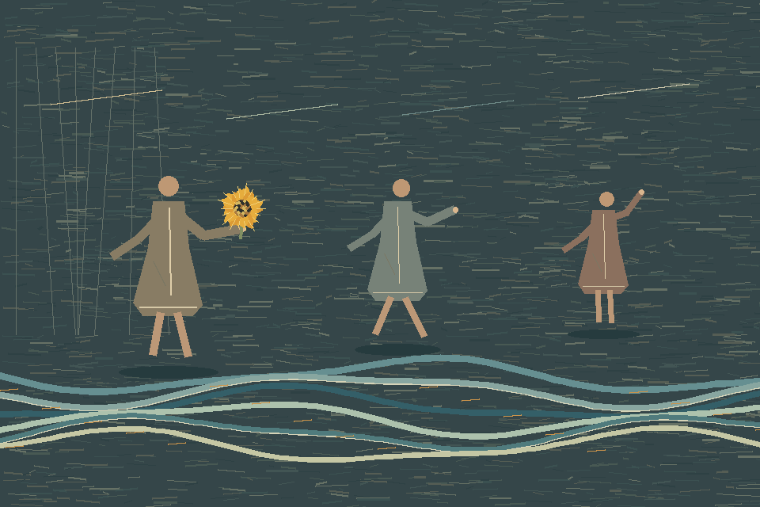

Turnwater · Dance film · 2026

Common Water
Three figures pass one sunflower while two currents travel in opposite directions beneath them. The flower reaches a hand; the water keeps turning.
Drawn frame by frame. The dancers and stage are invented.
The four-action score—extend, lift, turn, hold—grew from a bounded study of a brief sword phrase in a Kazuno community introduction to Dainichido Bugaku. This film is not a reconstruction of that dance.
The imagined lake takes its changing current from the Tonle Sap's seasonal reversal. Monet's Bouquet of Sunflowers and David Hockney's gathered views were companions in looking, not styles to imitate.